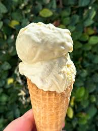

Ice Cream recipe

Vanilla Ice Cream!
Vanilla ice cream is a classic, creamy frozen dessert known for its smooth texture and subtly sweet, comforting flavor. It’s typically made from a base of milk, cream, sugar, and egg yolks (in traditional custard-style recipes), infused with vanilla—often from real vanilla beans or extract.
The flavor is gentle and aromatic rather than bold. Good vanilla ice cream has a rich, slightly floral scent and tiny specks of vanilla bean throughout, giving it a natural, authentic look. Its taste is balanced: sweet but not overpowering, with a warm, mellow depth from the vanilla.
Texture-wise, it’s soft and velvety when freshly scooped, melting easily on the tongue. High-quality versions feel dense and creamy rather than icy.
Even though it’s simple, vanilla ice cream is incredibly versatile—it pairs well with almost anything, from pies and cakes to fresh fruit, or it can be enjoyed entirely on its own for a clean, satisfying treat.
Ingredients needed for this dish!
- 2 cups of heavy cream
- 1 cup whole milk
- 3/4 cup of sugar
- 1 tablespoon vanilla extract (or vanilla bean)
- Pinch of salt
Step by Step Guide!
- Whisk together the milk,sugar,and salt until the sugar dissolves.
- Stir in heavy cream and vanilla
- Refrigerate for at least 2-4 hours (or overnight). This improves texture
- Pour into your ice cream maker and churn according to instructions (usually 20-25 minutes)
- Transfer to a container and freeze for 2-4 hours until firm.
And now you have Ice Cream!
Home Page